Publication Content
 | Les Perles de Perse: La Poésie Philosophique de Nasir-i Khusraw I. B. Tauris en association avec l’Institut des Etudes Ismaili, 2012 Plus |
 | L’esprit de Tolérance en Islam I. B. Tauris Publishers en association avec L’Institut des Etudes Ismaili, 2012. Plus |
 | Sur la Magie I : Une édition capitale en arabe avec une traduction en anglais de l'épître 52 a L’Oxford University Press en Association avec L’Institut des Etudes Ismaili, 2011 Plus |
 | Manuscrits Arabes, Persans et Gujarati
La Collection Hamdani à la Bibliothèque de l’Institut des Etudes Ismailis
I.B. Tauris in association with the Institute of Ismaili Studies, London 2011. Plus |
 | La Spiritualité dans l'Islam Shi’i: Croyances et Pratiques I. B. Tauris Publishers en association avec L’Institut des Etudes Ismaili, 2011. Plus |
 | Spiritual Quest: Reflections on Quranic Prayer According to the Teachings of Imam Ali
(Quête Spirituelle : Une Réflexion sur les Prières Quraniques d’après les Enseignements de l’Imam Ali) Plus |
 | A Modern History of the Ismailis: Continuity and Change in a Muslim Community ((L’Histoire Moderne des Ismailis : Continuité et Changement dans une Communauté Musulmane) I. B. Tauris Publishers in association with The Institute of Ismaili Studies, London 2010. Plus |
 | Interprétation Shiite de l’Islam : Trois Traités sur la Théologie et l’Eschatologie Islamique I. B. Tauris Publishers in association with The Institute of Ismaili Studies, London 2010 Plus |
 | On Logic: Une édition cruciale en arabe avec la traduction en anglais des épîtres 10-14 L’Oxford University Press en Association avec L’Institut des Etudes Ismaili, 2010 Plus |
 | Diversité et Pluralisme en Islam: Discours Historiques et Contemporains parmi les Musulmans I. B. Tauris en association avec l’Institut des Etudes Ismaili, 2010 Plus |
 | Degrés d’excellence: un traité fatimide sur le leadership en islam I.B. Tauris en association The Institute of Ismaili Studies de Londres Plus |
 | Un Guide pour le monde musulman I.B. Tauris in association with The Institute of Ismaili Studies Plus |
 | Les Ikhwan al-Safa' et leur Rasa'il: Une Introduction Oxford Université Presse en association avec l’Institut des Études Ismaili, 2008 Plus |
 | Une Anthologie de Philosophie en Perse,Volume 2 :Pensées Ismaili à l'Age Classique I.B. Tauris en association avec l’Institut des Etudes Ismaili , 2008 Plus |
 | Les Ismailis : Une Histoire Illustrée Editions Azimuthen association avec l’Institut des Etudes Ismaili Plus |
 | Une Anthologie de la Philosophie en Perse, vol. 1:
De Zoroastre à Omar Khayyam
Editeurs: I.B. Tauris en association avec l’Institut des Etudes Ismaili , 2007 Plus |
 | Mot de Dieu, Art de l'Homme : Le Qur'an et ses Expressions Créatives. Morceaux Choisis du Colloque International de Londres, 18-21 Octobre 2003 Études Qur’aniques Séries, 4. Oxford: Oxford Université Presse en association avec L’Institut des Études Ismaili, 2007. Plus |
 | Les Arts de la Ville Victorieuse: Art et Architecture Islamique en Afrique du Nord et en Egypte Fatimide Le pôle presse de l’université de Yale en association avec l’Institut des Etudes Ismaili, 2007 Plus |
 | Approches du Coran dans l’Indonésie Contemporaine Qur’anic Studies Series. Oxford: Oxford University Press in association with The Institute of Ismaili Studies, 2005. Plus |
 | Le Nid de l’Aigle: Châteaux Ismailis en Iran et en Syrie Séries Héritage ismaili, 10. Londres: I. B. Tauris en association avec l’Institut des Etudes Ismailies, 2005. Plus |
 | Paradis de la soumission: Un traité médiéval sur la pensée ismailie S.J. Badakhchani, ed. et tr., Paradis de la soumission: Un traité médiéval sur la pensée ismailie. Une nouvelle édition perse et de traduction anglaise du Rawda-yi Taslim de Nasir al-Din Tusi. Textes ismaili et séries de traductions, 5. Londres: I.B. Tauris en association avec l’Institut des Etude Plus |
 | Littérature ismailie: Une bibliographie des sources et des études. Londres: I.B. Tauris en association avec L’Institut des Etudes Ismailies, 2004. pp. 469. Plus |
| 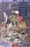 | Les Ethiques musulmanes: Des points de vues émergeants I.B. Tauris en association avec l’Institut des Etudes Ismaili, 2004. pp. 164. Plus |
| 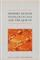 | Les intellectuels musulmans modernes et le Coran Etudes des Séries Coraniques, 1. Oxford: Presse de l’Université Oxford en association avec l’Institut des Etudes Ismailies, 2004. pp. 342. Plus |
| 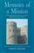 | Mémoires d’une Mission: Le Scientifique, Homme d’Etat et Poète ismaili,
al- Mu’ayyad Fi’l-Din al-Shirazi Séries Héritage ismaili, 9. Londres: I.B. Tauris en association avec l’Institut des Etudes Ismailies, 2003. pp. xx + 160. Plus |
| 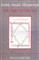 | Les Manuscrits Ismailis en Arabiques: La Collection Zahid ‘Ali dans la Bibliothèque de l’institut des Etudes Ismailies Londres: I.B. Tauris en association avec L’Institut des Etudes Ismailies, 2003. pp.xxiii + 215. Plus |
| 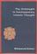 | L’impensé dans la Pensée islamique contemporaine Londres: Livres Saqi en association avec l’Institut des Etudes Ismaili, 2002. pp. 352. Plus |
 | La Société Civile dans le monde Musulman: Perspectives Contemporaines Londres: I. B.Tauris en association avec l’Institut des Etudes Ismailies, 2002. pp. 339. Plus |
 | Un parfum de Santal: Les Chants Religieux Indo Ismaili Esmail, Aziz. Un Parfum de Santal: Les Chants Religieux Indo Ismaili. (Londres: Curzon en Association avec L’Institut des Etudes Ismailies, 2002) pp. xi + 227. Plus |
| Survivre aux Mogols: Nizari Quhistani et la Continuité
de la Tradition Ismaili en Perse Londres: I.B. Tauris en association avec l’Institut des Etudes Ismaili, 2002 pp. xvi + 190. Plus |
| 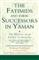 | Les Fatimides et leurs successeurs au Yémen: L’Histoire d’une communauté islamique. Edition Arabe et résumé en anglais du volume 7 ‘Uyun al-akhbr de Idris ‘Imad al-Din, Londres: I.B. Tauris en association avec l’Institut des Etudes Ismailies, 2002. pp. x + 109 (Anglais) + 397 (Arabe). Plus |
| 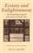 | Extase et Eclaircissement: La Littérature dévotionnelle
ismailie de l’Asie du Sud. Londres: I.B. Tauris en association avec l’Institut des Etudes Ismailies, 2002. pp. xxii + 183. Plus |
| Les Doctrines de l’Islam Shi‘i : Abrégé des Croyances et Pratiques Imamis traduction et publication anglaise par Reza Shah Kazemi, Londres : I.B. Tauris en association avec L’Institut des Etudes Ismailies, 2001, pp. xix + 240. Plus |
| Débat avec le Philosophe : Une Réfutation de la Métaphysique d’Avicenne Une nouvelle édition arabe et traduction anglaise du Kitab al-Musara‘a. de Muhammad b. ‘Abd al- Karim al- Shahrastani. Séries des Textes et Traductions Ismailies, 2.( Londres : I.B. Tauris en association avec L’Institut des Etudes Ismailies, 2001) pp. v + 107 (anglais) +135 (arabe). Plus |
| 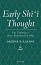 | Pensée shi’ite primitive : les Enseignements de l’Imam Muhammad al-Baqir Londres, I.B. Tauris en association avec The Institute of Ismaili Studies, 2000. 256 pp. Plus |
| 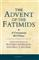 | The Advent of the Fatimids: A Contemporary Shi‘i Witness Edition et traduction anglaise du Kitab al-Munazarat d’Ibn al-Haytham. Ismaili Text and Translations Series, 1. Londres, I.B. Tauris en association avec The Institute of Ismaili Studies, 2000. xiv, 192, 134 pp. Plus |
| 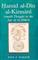 | Hamid al-Din al-Kirmani: La Pensée Ismailie au temps d’al-Hakim Ismaili Heritage Series, 3. Londres: I.B. Tauris en association avec l’Institut des Etudes Ismailies, 1999. pp xiv, 168. Plus |
| 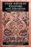 | Connaissance et Libération : Un traité sur la Théologie Philosophique ed. et tr., F.M Hunzai. Londres : I.B.Tauris en association avec L’Institut des Etudes Ismailies, 1998 (édition en livre de poche 1999, avec corrections). pp. XII,132 (partie anglaise) + pp. 92 (partie persane) Plus |
| 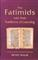 | Les Fatimides et leurs traditions d’étudier New York et Londres; I. B. Tauris en association avec l’Institut des Etudes Ismailies, pp. 120, 1997. Plus |
| 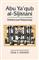 | Abu Ya‘qub al-Sijistani: Missionnaire Intellectuel Londres: I. B. Tauris en association avec l’Institut des Etudes Ismailies, 1996. pp xv, 132. Plus |
| Faites un Bouclier de la Sagesse: Versets Sélectionnés de Divan de Nasir-i Khusraw Londres: Kegan Paul International, en association avec l’Institut des Etudes Ismaili, 1993. pp, vii, 103. Reprinted in 2001 by I. B. Tauris. Plus |
| 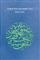 | Temps cyclique et Gnose ismaélienne trad. Ralph Manheim et James Morris. Londres: Kegan Paul International en association avec Islamic Publications Ltd., 1983. pp. x, 212. Plus |
 Entrée
Entrée